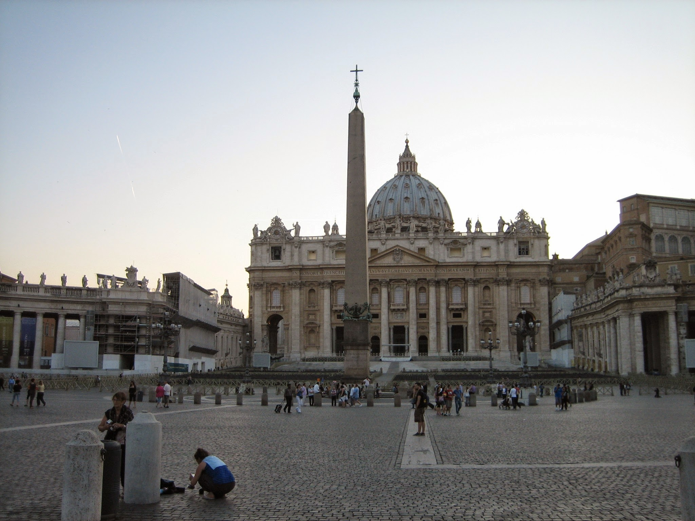
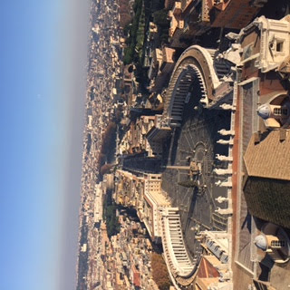
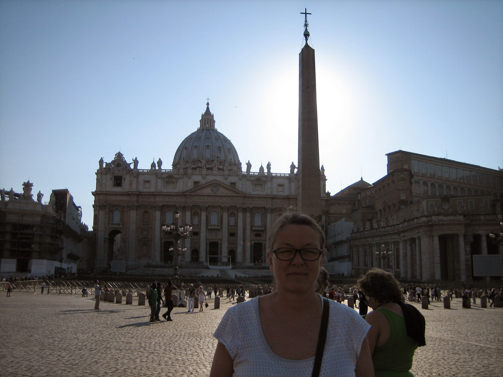
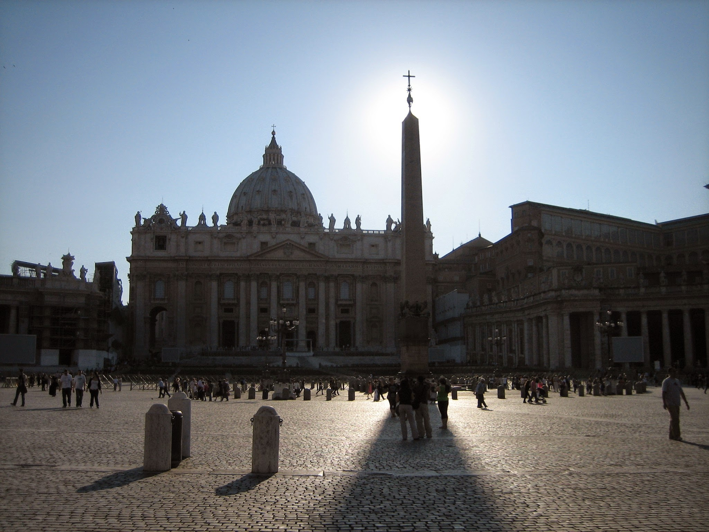
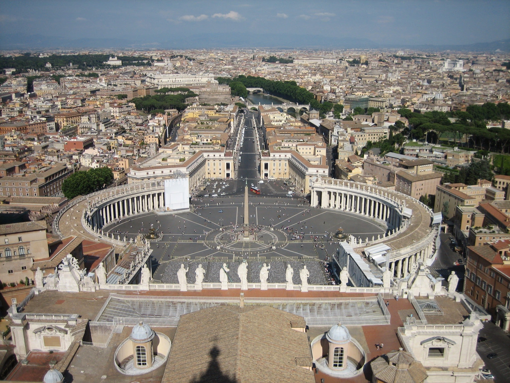

Et sten,
en skygge,
hele himlen
Et solur er menneskets ældste astronomiske instrument — og stadig det mest direkte. En skygge falder, en streg er trukket, og Jordens drejning bliver synlig i marmor. En interaktiv rejse gennem solurets fysik, dets fem grundtyper, og monumentet i Delhi der gjorde et urværk af himlen.
Hvorfor en skygge kan fortælle tiden
Jorden drejer en gang om sin akse på 24 timer. For en iagttager på overfladen betyder det, at Solen tilsyneladende vandrer 360° rundt om himlen i samme tid — altså 15° pr. time. En lodret pind i jorden kaster en skygge, der følger denne bevægelse. Hvis vi inddeler underlaget i de rigtige vinkler, får vi en tidsmaskine drevet af planeten selv.
Den afgørende detalje er ikke pinden, men dens retning. Hvis pinden — eller mere præcist gnomonen — peger parallelt med Jordens rotationsakse, så bevæger skyggen sig jævnt hen over en passende dial. 15° hver eneste time, året rundt. Hvis gnomonen står lodret eller skævt, bliver skyggens hastighed ujævn, og dialets stregspacering må beregnes i stedet.
De tre nødvendige elementer
Gnomonen · den skyggekastende kant. Pegende mod den himmelske nordpol.
Dialet · fladen som skyggen bevæger sig hen over. Vandret, lodret, hældet — afhængigt af typen.
Timestregerne · markeringerne der oversætter skyggens position til timer. Geometrien afhænger af både dial-orientering og iagttagerens breddegrad.
Den vigtigste vinkel
Gnomonens hældning skal præcis svare til iagttagerens geografiske breddegrad. I Danmark, hvor breddegraden er omkring 56°, hælder gnomonen 56° op over horisonten og peger mod nord. I Delhi, hvor breddegraden er 28,6°, hælder den kun 28,6°. Dette krav er den ene fundamentale grund til, at et solur fra Stockholm ikke kan flyttes til Madrid og fortsat være korrekt.
De fem grundtyper
Alle solure deler det samme princip: en gnomon parallel med Jordens akse kaster en skygge på et dial. Forskellen ligger i dialets orientering. Vælg en type herunder for at se geometrien — gnomonen forbliver den samme, mens dialet roterer omkring den.
Ækvatorialt solur
Dialet ligger parallelt med Jordens ækvatorplan, og gnomonen står vinkelret på det. Det er den matematisk reneste type: timestregerne er fuldstændig jævnt fordelt med 15° mellem hver. Tidens læsning kan foretages direkte med en gradskive.
Hvor skal stregerne stå?
For et ækvatorialt solur er svaret simpelt: jævnt fordelt med 15° mellem hver streg. Men for et horisontalt solur — den klassiske havemodel — bliver geometrien afhængig af breddegraden. Stregerne presses sammen om middag og spredes ud morgen og aften, og fordelingen ændrer sig hver gang man flytter soluret nord eller syd.
Træk i breddegrad-slideren herunder for at se, hvordan stregerne bevæger sig. Den røde streg er Delhi (28,6°), den blå er København (55,7°), og den gule er din valgte position.
Et nordeuropæisk solur i Indien?
Forskellen mellem 55,7° og 28,6° er ikke blot kosmetisk. Et horisontalt solur bygget til København har timestreger næsten dobbelt så langt fra middagslinjen som et tilsvarende dial bygget til Delhi. Flytter man et københavnsk solur til Delhi, vil det stadig kaste en skygge — men aflæsningen vil være systematisk forkert med flere minutter, der vokser jo længere fra middag man kommer.
Fem tusind år i sten
Solurets historie er menneskets længste forhold til et bestemt instrument. Mens stenaldermennesket stadig regnede dage på fingre, rejste de første egyptere obelisker, der ikke alene markerede magten, men også tiden. I 5000 år forfinede én civilisation efter den anden princippet — og hver forbedring var et lille skridt mod en mere præcis aflæsning af himlen.
Egypten — den lodrette obelisk
Allerede omkring 3500 f.Kr. rejste egypterne obelisker, der ikke kun var monumenter til guden men også fungerede som primitive solure. Skyggen fra obeliskens spidse top vandrede hen over de markerede sten omkring soklen, og opdelte dagen i morgen og eftermiddag. Skyggens længde ved middagstid afslørede desuden årets længste og korteste dage — og dermed solhverv og jævndøgn.
Omkring 1500 f.Kr. kom det egentlige skyggeur: et L-formet stykke skifer med en lodret tværbjælke i den ene ende. Skyggens længde langs den horisontale arm angav timen, og delte dagen i seks afsnit fra solopgang til middag — og igen seks fra middag til solnedgang. Det var ikke nøjagtigt, og timerne om sommeren havde anden længde end timerne om vinteren, men det var tidens første instrument.
Grækenland — geometriens tøvende sejr
Det var grækerne, der gjorde solurene til videnskab. Astronomen Aristarchos af Samos konstruerede omkring 280 f.Kr. den hemisfæriske skaphē — en halvkugleformet skål hugget i sten med en lodret pind i centrum. Skyggens spids vandrede henover skålens indre flade og fulgte derved Solens bane på en måde, der kunne afkodes geometrisk. Senere udviklede grækerne også keglesnit-baserede solure og udnyttede deres dybe forståelse af kuglegeometri til at konstruere instrumenter med matematisk nøjagtighed. Vindenes Tårn i Athen, fra ca. 100 f.Kr., bar otte forskellige sundials på sin oktagonale fasade.
Rom og Solarium Augusti
Romerne adopterede den græske skaphē og spredte solure i hele imperiet. Den berømteste roman tidsmaskine var Solarium Augusti på Marsmarken i Rom, opført år 10 f.Kr. af kejser Augustus. Som gnomon brugte han en ægyptisk obelisk fra Farao Psamtik II — selve søjlen var således 600 år ældre end den plads, den nu kastede skygge over. Skyggens spids tegnede de nordlige og sydlige bevægelser hen over en kæmpe marmoriseret pelekinon (en flad skål med kurver) på pladsen.
Den islamiske revolution
I middelalderen, mens Europa havde tabt det meste af den klassiske geometri på gulvet, blomstrede solur-videnskaben i den islamiske verden. Den marokkanske astronom Abu al-Hasan al-Marrakushi beskrev i begyndelsen af det 13. århundrede mange solur-typer og fremmede begrebet lige lange timer — uanset årstid.
Men det afgørende gennembrud kom med Ibn al-Shatir i Damaskus i året 1371. Hans bevarede solur, monteret på Umayyade-moskéens minaret, er det ældste eksisterende solur med en polar-akse-gnomon — det vil sige med skygge-pinden parallel med Jordens rotationsakse. Det var en simpel observation med kolossale konsekvenser: når gnomonen står parallelt med Jordens akse, bevæger skyggen sig jævnt hen over dialet, 15° pr. time, hver eneste dag, året rundt. Tidens målbarhed blev for første gang frigjort fra årstiden.
Lodrette stensøjler hvis skygger delte dagen og afslørede solhverv.
L-formet skifer med tværbjælke. Tolv ulige timer fordelt over dagen.
Halvkugleformet skål med lodret gnomon. Den første geometrisk korrekte form.
Oktagonalt monument med otte solure, ét på hver fasade — verdens første ur-station.
Ægyptisk obelisk genbrugt som gnomon på en marmor-pelekinon for kejser Augustus.
Beskrev mange solur-typer og argumenterede for ensartede timer hele året.
Verdens ældste bevarede solur med gnomon parallel med Jordens akse — princippet bag alle moderne solure.
Polar-akse-soluret optræder i europæiske kilder. Renæssancens haver fyldes med dem.
Det danske underjordiske observatorium. Tycho's instrumenter satte ny standard for præcision.
Det polare princip skaleret op til monument-størrelse. Et solur så stort, at fejlen i selve aflæsningen forsvinder.
Bemærk hvor lang tid der gik mellem Aristarchos' geometriske skaphē (280 f.Kr.) og Ibn al-Shatir's polare gnomon (1371). Næsten 1700 år hvor solure blev brugt — men hvor en time om sommeren ikke var en time om vinteren. Det var ikke teknik der manglede; det var den ene rigtige vinkel.
Jantar Mantar — astronomien som monument
I 1724 stod et hold stenhuggere midt i Delhi og lagde første sten til et hidtil uset astronomisk eksperiment. Bygherren var Maharaja Sawai Jai Singh II af Jaipur, en regent med matematisk skoling og en mistro til de eksisterende stjernetabeller. Resultatet var Jantar Mantar — et observatorium ikke af messing og glas, men af kalksten i bygningsstørrelse. Tretten instrumenter, alle store nok til at gå rundt i, designet til at gøre selv en uøvet aflæsning af Solens og stjernernes position pålidelig.
Navnet betyder "instrumenter til måling af himmelens harmoni", og Delhi-anlægget var det første af fem; siden fulgte Jaipur, Ujjain, Mathura og Varanasi. Det var muhamadansk kejser Muhammad Shah der gav opgaven, fordi de tilgængelige tabeller for solens og månens bevægelser var blevet upålidelige. Jai Singh II's løsning var radikal: hvis præcisionen begrænses af aflæsningens skala, så byg instrumenter så store, at fejlmarginen forsvinder ind i selve stenens dimensioner.
Det herskende instrument
Centrum i hvert anlæg er Samrat Yantra — "det herskende instrument". Det er et kæmpe ækvatorialt solur skabt i form af en trekantet mur, hvis hypotenusekant peger nøjagtigt mod den himmelske nordpol. På begge sider af trekanten er der bygget kvadrant-formede arc-buer, der ligger parallelt med Jordens ækvatorplan. Når Solen står på den ene side af himmelen, falder skyggen fra trekantens kant på den ene kvadrant; når den krydser meridianen, skifter aflæsningen til den anden side.
Princippet er nøjagtig det samme som et almindeligt ækvatorialt havesolur — kun skalaen er en anden. Hvor en hobbyastronom kæmper for at læse minutter af et 30 cm dial, kunne man på Samrat Yantra følge skyggen vandre over flere meter sten i timen. Her bevæger skyggen sig synligt, omkring 1 mm i sekundet, og 6 cm i minuttet.
Hypotenusens hældning på 28,6° i Delhi og 27° i Jaipur er ikke et tilfælde — det er nøjagtigt de to byers breddegrader. Når trekantens skarpe kant peger 28,6° op over horisonten i nordlig retning, så peger den nøjagtigt mod den himmelske nordpol, præcis som forskriften kræver det for ethvert ækvatorialt solur. Forskellen ligger i, at Samrat Yantras gnomon ikke er en pind men en muret mur på 3 meters tykkelse.
De andre instrumenter
Jaya Prakash Yantra · to halvkugleformede skåle hugget i sten, hvor himmelhvælvet er afbildet inverst på indersiderne. Stjerner, planeter og Solen kan stedfæstes ved at krydsmarkører over skålens kant. En menneskelig himmel, set fra inderside.
Rama Yantra · to cylindriske bygninger med åbne tage og en lodret stang i midten. Stangens skygge på cylindervæggens ribber afslører Solens højde over horisonten samt dens azimut.
Misra Yantra · "blandede instrumenter" — fem instrumenter forenet i én skulpturel komposition. Det vigtigste blandt dem kan vise middag samtidigt for fire forskellige byer i verden, ved hjælp af graderede vinkler indstillet til Greenwich, Notke (Japan), Serichev (Stillehavet) og Zürich.
I dag står Samrat Yantra i Delhi mellem skyskrabere — bygningerne omkring observatoriet skygger nu for nogle af aflæsningerne, og monumentet er primært et arkæologisk vidnesbyrd. Den større tvilling i Jaipur, der er optaget på UNESCO's verdensarvsliste, fungerer fortsat: en skarp middag, en god observatør, og 27 meter sten kan stadig give lokal soltid med to sekunders nøjagtighed.
Peterspladsen — en obelisk fra Heliopolis bliver til en gnomon
Mens stenhuggerne i Delhi rejste deres trekantede mure, stod der allerede i Rom et færdigt monument af forbavsende geometrisk renhed: en 25 meter høj egyptisk obelisk af rød granit, som havde stået midt på Piazza San Pietro siden 1586. Den var bragt til Italien af kejser Caligula i år 37 og havde i halvandet årtusinde tjent som et trofæ uden funktion. I 1817 fik den endelig en. Pave Pius VII lod indlægge en meridianlinje og syv runde marmorskiver i pladsens belægning, og fra den dag var Berninis pragtplads også verdens største meridiansolur.





En sten med fire historier
Obelisken er allerede et monument før den blev et solur. Den blev hugget i Heliopolis af en ukendt farao — det er den eneste obelisk i Rom, der ikke bærer hieroglyffer. Augustus flyttede den til Alexandria, Caligula til Rom, hvor den i 1500 år stod ved Neros cirkus, kun få meter fra Sankt Peters formodede grav. I 1586 brugte ingeniøren Domenico Fontana fire måneder, 900 mand, 140 heste og 45 spil til at flytte de 320 tons granit de sidste 250 meter til sin nuværende placering — under dødsstraf for støj fra publikum, så Fontana kunne høre sit kommando over rebene. Det var et byggeprojekt så bemærkelsesværdigt, at Sixtus V lod udgive et helt bogværk med stik om operationen.
Hvad er et meridiansolur?
Det meridiansolur, som Pius VII anlagde, er ikke et almindeligt solur. Et almindeligt solur viser timer hen over hele dagen — skyggen vandrer 15° hver time hen over et dial. Et meridiansolur — en meridiana — gør noget anderledes og mere ambitiøst: det viser kun ét tidspunkt om dagen, nemlig den øjeblik Solen krydser den lokale meridian (sand middag). Til gengæld kan det vise hvilken dag i året det er, fordi skyggens længde ved middagstid skifter dramatisk hen over årets løb.
Princippet: på Vatikanets breddegrad (φ = 41,9° nord) står Solen ved sand middag højt på himlen om sommeren — næsten 72° over horisonten ved sommersolhverv — og lavt om vinteren, kun 24,6° ved vintersolhverv. Forskellen i altitude betyder forskel i skyggelængde. En 41 meter høj obelisk kaster en skygge på 13,6 meter ved sommersolhverv og hele 89,5 meter ved vintersolhverv. Denne lange procession af skyggespidsen over pladsen er hele kalenderen i én streg.
Skyggens vandring gennem året
De syv skiver i belægningen
Når man står på Peterspladsen og kigger ned i belægningen, ser man ikke en almindelig solurs-skive med romertal. Man ser en lang granitstribe — meridianen — der løber fra obeliskens fod mod nord, gennem Maderno-springvandet og op mod paladsvinduet, hvor paven hver søndag velsigner pilgrimene. Langs denne linje ligger syv runde marmorskiver: én ved hver af de to solhverv, og fem mellem dem, som markerer den dag, hvor Solen træder ind i et nyt stjernetegn. Tolv zodiak-perioder, men kun syv skiver — fordi de to lige langt fra solhverv (f.eks. tyren og jomfruen) deler en skive, da skyggen falder samme sted på vejen ud og tilbage.
Den syvende — og den der ligger tættest på obelisken — er Krebsens skive, der markerer sommersolhverv den 21. juni. Her ligger skyggespidsen kun en lille snes meter fra basens fod. Den fjerneste, knap 90 meter ude i pladsen, markerer Stenbukken og vintersolhverv. Når man som besøgende går fra den ene til den anden, går man bogstaveligt talt gennem et halvt år.
Hvorfor 1817? Og hvorfor zodiaktegn på Petersplads?
Pave Pius VII's beslutning om at gøre obelisken til en kalender havde en konkret baggrund. Et århundrede tidligere havde Pave Clemens XI ladet astronomen Francesco Bianchini bygge en præcisionsmeridian inde i kirken Santa Maria degli Angeli, designet til at verificere den gregorianske kalenderreform og bestemme påsken med fuld præcision. Kirken havde altid haft brug for astronomi: at vide hvornår der var middag (for Angelus-bønnen), hvornår der var jævndøgn (for påsken), hvornår sommersolhverv (for Johannes Døberen). Obelisken i Peterspladsen blev den offentligt synlige udgave af denne tradition — astronomien som by-monument, så hver pilgrim ved selvsyn kunne se året skride frem i sten.
Zodiakens stjernetegn er, modsat hvad man måske skulle tro, ikke et levn af hedensk himmelmagi. De fungerer her som tidsenheder: hver 30° af Solens årlige bane langs ekliptikken får sit symbol, ganske som hver 30° af døgnet får sit timetal på et urskive. Det er det samme system babylonerne brugte for over 2500 år siden, da de delte himlens årlige cyklus i tolv lige store stykker. På Peterspladsen er stjernetegnene altså ikke et religiøst budskab — de er klokkeslæt for året.
Familieslægtskab med Jantar Mantar
Det er værd at notere parallellen til det forrige kapitel. Mens Jai Singh II i Delhi (1724) byggede et 21-meters trekantet ækvatorialt solur for at gøre aflæsningens skala så stor, at fejlen forsvandt, gjorde Pius VII i Rom næsten et århundrede senere det samme valg — men anvendte en allerede stående 25-meters granitobelisk fra det gamle Egypten som gnomon. To monumenter, to filosofier, samme grundindsigt: hvis præcisionen begrænses af aflæsningens størrelse, så lad bygningen være instrumentet. Forskellen er, at Samrat Yantra blev bygget som et solur, mens Vatikanets blev til et — efter 1854 år som rent dekorativt trofæ.
Tidsligningen, og hvorfor uret aldrig stemmer
Selv et perfekt bygget solur viser ikke det samme som dit armbåndsur. Forskellen kan være op til 16 minutter, og den skifter fortegn fire gange i løbet af et år. Fænomenet kaldes tidsligningen, og det skyldes to uafhængige effekter, der lægger sig oven i hinanden.
To grunde, en figur
Den første årsag er, at Jordens bane om Solen ikke er en cirkel, men en ellipse. I januar er vi tættest på Solen og bevæger os hurtigst i banen; i juli sker det modsatte. Solen "vandrer" derfor uensartet hen over himlen i løbet af året. Den anden årsag er Jordens aksehældning på 23,5° — som betyder at Solens bevægelse, projiceret på himlens ækvator, varierer med årstiden. De to effekter giver tilsammen en kurve i form af et analemma — et figur-8 som Solen tegner på himlen, hvis man fotograferer den hver dag på samme klokkeslæt gennem et helt år.
Berømte solure verden rundt
Byg dit eget solur
Geometrien er ikke en hemmelighed forbeholdt astronomer. Med din egen breddegrad, et stykke pap, og en kniv kan du have et fungerende horisontalt solur i løbet af en eftermiddag. Værktøjet herunder beregner timestregerne for dit sted, og giver dig et printbart dial som du kan klippe ud og rejse i din have.
Sådan bruger du dit solur
1. Print dialet og klip det ud. 2. Konstruér en gnomon af karton: et retvinklet trekantet stykke, hvor den ene side har samme vinkel som din breddegrad (vist ovenfor). Klæb gnomonens lange side fast langs middagslinjen (kl. 12) sådan, at spidsen peger mod nord på den nordlige halvkugle, mod syd på den sydlige. 3. Placer dialet på et plant underlag og orientér det nøjagtigt efter det magnetiske kompas (med korrektion for den lokale missvisning). 4. Skyggens position aflæses som lokal soltid — husk dog tidsligningen og tidszonejusteringen, hvis du vil sammenligne med dit armbåndsur.